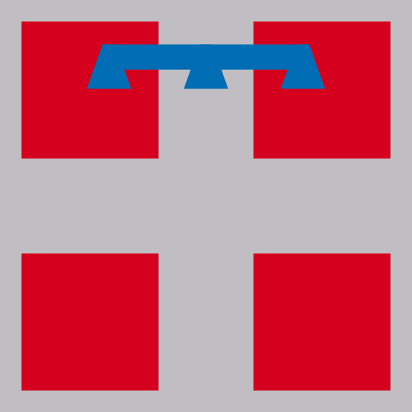

| Valle d'Aosta |
Lombardia |
| Piemonte |
| Liguria |
| 125 k |
| 10.103 k |
| 4.341 k |
| 1.543 k |
| 3.260,90 km² |
| 23.863,65 km² |
| 25.387,07 km² |
| 5.416,21 km² |
| Toscana |
| Marche |
| Lazio |
| 3.722 k |
| 1.518 k |
| 5.865 k |
| 22.987,04 km² |
| 9.401,38 km² |
| 17.232,29 km² |
| Puglia |
| Calabria |
| Campania |
| 4.008 k |
| 1.924 k |
| 5.785 k |
| 19.540,90 km² |
| 15.221,90 km² |
| 13.670,95 km² |